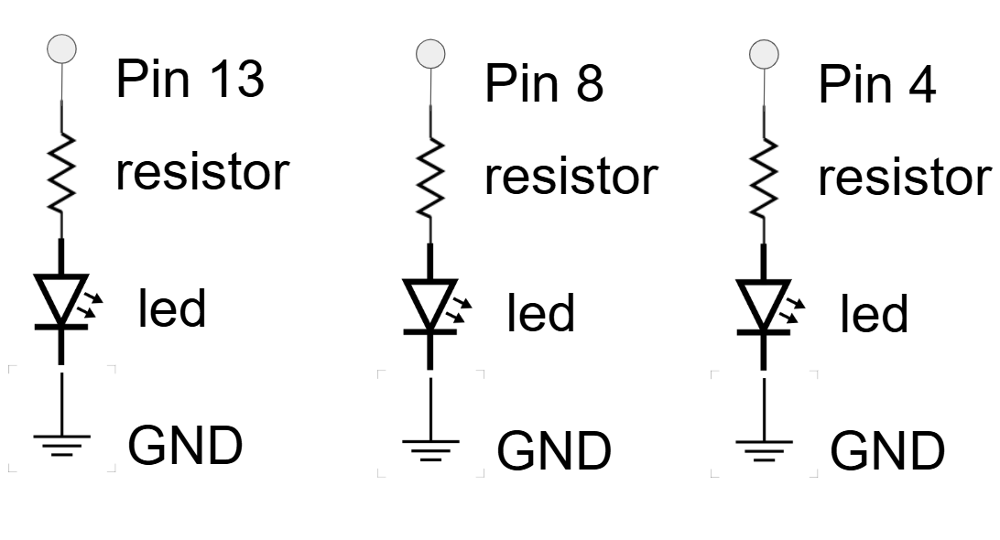
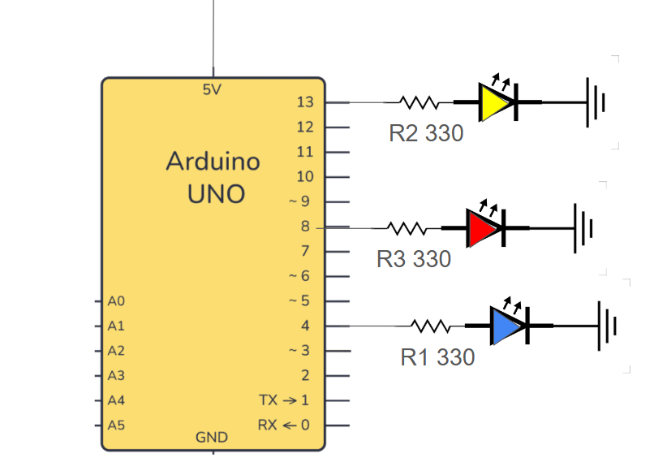
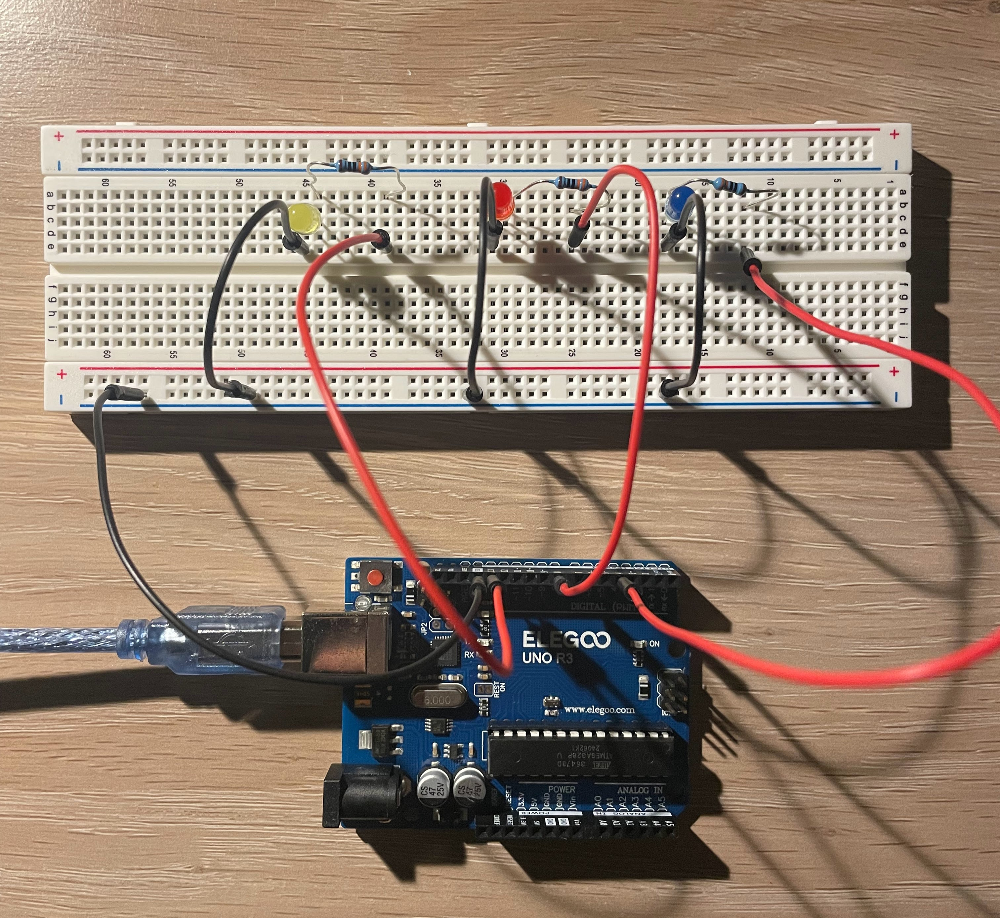
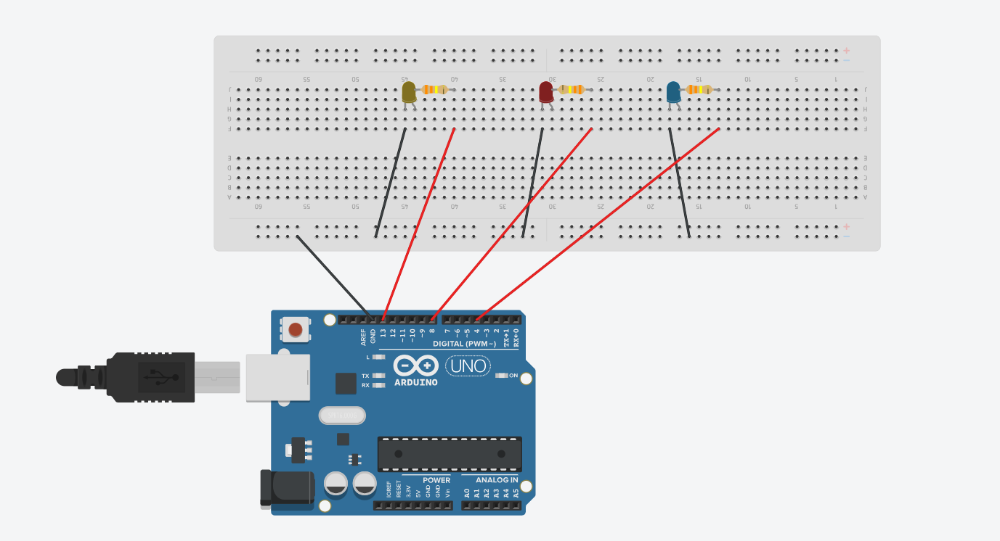
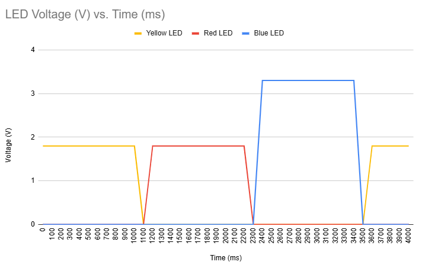

Schematic of Blink!
 Resistor Calculation
To calculate the resistor value for each LED, I used Ohm's Law. Each LED is 20mA (0.02A), and the Arduino gives 5 volts so:
Red LED:
Voltage drop: 1.8
V = 5V - 1.8V = 3.2V
I = 20mA = 0.02A
R = V / I = 3.2V / 0.02A = 160Ω
Yellow LED:
Voltage drop: 1.8
V = 5V - 1.8V = 3.2V
I = 20mA = 0.02A
R = V / I = 3.2V / 0.02A = 160Ω
Blue LED:
Voltage drop: 3.3V
V = 5V - 3.3V = 1.7V
I = 20mA = 0.02A
R = V / I = 1.7V / 0.02A = 85Ω
The closest resistor is 250Ω however, I used a 330Ω resistor for each LED in our circuit because using a higher resistor does not negatively affect the performance of the circuit.
Here is an image of the schematics for Blink!
Circuit of Blink!
 Here is a picture of the circuit for Blink!.
Firmware for Blink!
//Blink
//Turns an LED on for one second, then off for one second, repeatedly.
void setup() {
// initialize digital pin LED_BUILTIN as an output.
pinMode(13, OUTPUT);
pinMode(8, OUTPUT);
pinMode(4, OUTPUT);
}
// the loop function runs over and over again forever
void loop() {
// turn the LED connected to pin 13 on (HIGH is the voltage level)
digitalWrite(13, HIGH);
// wait for 100 miliseconds
delay(1000);
// turn the LED connected to pin 13 off (LOW is the voltage level)
digitalWrite(13, LOW);
// wait for 100 miliseconds
delay(100);
// turn the LED connected to pin 8 on (HIGH is the voltage level)
digitalWrite(8, HIGH);
// wait for 1000 miliseconds
delay(1000);
// turn the LED connected to pin 8 off (LOW is the voltage level)
digitalWrite(8, LOW);
// wait for 100 miliseconds
delay(100);
// turn the LED connected to pin 4 on (HIGH is the voltage level)
digitalWrite(4, HIGH);
// wait for 1000 miliseconds
delay(1000);
// turn the LED connected to pin 4 off (LOW is the voltage level)
digitalWrite(4, LOW);
// wait for 100 miliseconds
delay(100);
}
Here is all the documentation for assignment 1!
Blink! Operation

Here is a GIF of Blink! working.
Answers to Questions
Q1. Draw a graph where the X axis is time and the Y axis is voltage across the LEDs. Draw a line for each of your 3 LEDs.
Q2. How many LEDs could you blink independently with your Arduino? How much current would that draw?
I would be able to blink 13 LEDs on this Arduino since there is a maximum of 13 pin slots available. Blinking 13 LEDs would draw 260 mA since 13 LEDs x 20 mA each is 260 mA.
Q4. How fast do you need to blink your LEDs until you no longer can tell that they are blinking?
I would have to blink the LEDs at less than 1 milisecond on and off to achieve the appearance that the LEDs are not blinking.